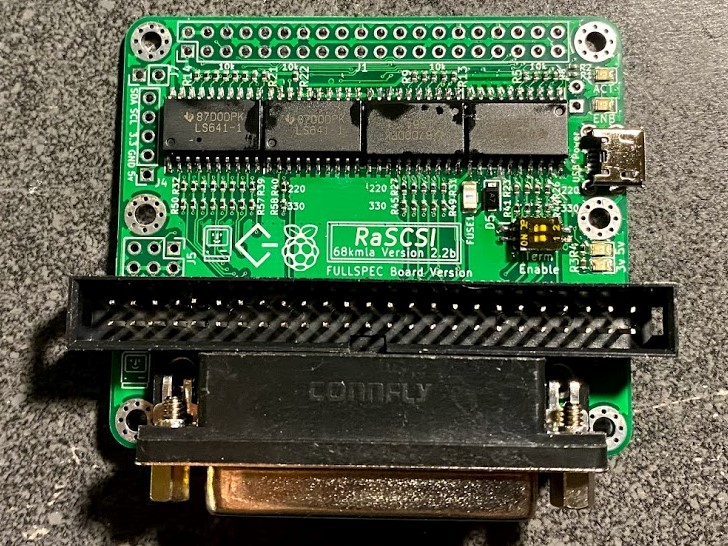
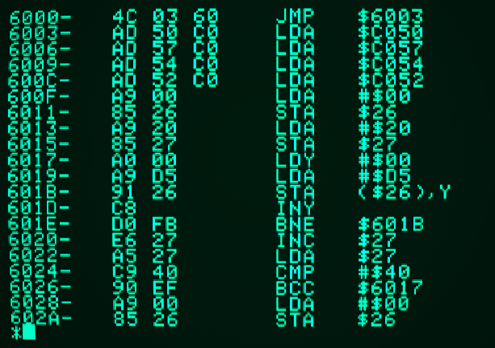

So basically for my senior capstone project I'm going over my development process for making a videogame on an Apple II as well as the neat technical details that go into different aspects of the game like the graphics, sound, and game code. Now you may be asking yourself, "What the actual frick is some 18 year old doing messing around with computers more than twice his age?" To keep it relatively short, I had an opportunity to repair a 1986 Macintosh Plus and I presented the results of my work at an event hosted by the school's Gifted and Talented Program. This is when I fell in love with old computers and soon after this is when I got ahold of an Apple II+. One thing led to another and now I'm making a videogame. A demo of my videogame will be posted here later this month if anyone is interested.
Making a Game Like it's 1983
PWR Skills
Civic & Global Engagement
I registered to vote like 3 days ago so I can do what the adults call "contributing to our democracy".
Self Direction & Personal Responsibility
Throughout high school, I've worked on many projects computer projects including the Macintosh Plus repair I mentioned earlier as well as basic network connectivity features for a Powerbook computer using a PiSCSI. As you might imagine, there's not much content about how to accomplish my goals for each of these projects so I had to figure out much of this stuff myself.
Communication
Although with many of my problems with my computers I have a general idea of what's wrong, I still occasionally seek conformation from people online to verify I'm on the right track and perhaps provide some helpful insights. Here is an example of such a case.
Critical & Creative Thinking
When writing the code, I have to think about ways to best optimize the speed of program execution and how much space the program takes on the floppy disk as well as within the computer memory. There can be many ways to write code so that it accomplishes a task, but a well written program is always written to maximize efficiency.
Collaberation & Leading by Influence
Agility & Adaptability
Capstone Essay
Here is a link to my Capstone essay. Note that I did my best to make sure that everything was factual to the best of my knowlege, however, I may have made a mistake at some point in the essay.
Interview
Proposal
Here is a link to my Capstone proposal
Presentation
Since my presentation is on a floppy disk image, in order to view the presentation you'll need to load the image into an emulator.